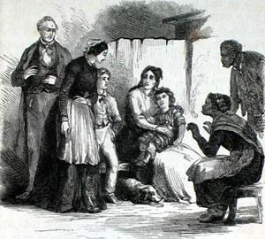

This is an archived copy of History Matters, provided by the Roy Rosenzweig Center for History and New Media. To explore this content in a new interface, visit Who Built America?.

Uncle Tom’s Cabin and American Culture: A Multimedia Archive
http://www.iath.virginia.edu/utc/
Directed by Stephen Railton, University of Virginia, with the Electronic Text Center, the Institute for Advanced Technology in the Humanities, and Alderman Library Special Collections, all at University of Virginia; and the Harriet Beecher Stowe Center, Hartford, Connecticut.
Reviewed June 28–30, 2001.
If most Americans recognize Uncle Toms Cabin as a monumentally important Civil War-era novel by Harriet Beecher Stowe, few realize the extent to which Stowes creation (thanks in large part to the absence of copyright protections in mid-nineteenth-century America) subsequently mutated into several decades worth of popular culture incarnations. Uncle Toms Cabin and American Culture has gathered a remarkable breadth of these incarnations in text, images, audio, film clips, and material culture dating from 1830 to 1930. The site casts a wide and useful net, including the novel and much more: proslavery and African American responses to Stowes text; examples from the antebellum cultural contexts of sentimental culture, Christianity, the antislavery movement, and blackface minstrel shows; versions of Stowes novel for the popular stage; childrens books; illustrations; foreign-language editions; vaudeville skits; card games; porcelain figuresa remarkable collection for teaching about race and popular culture in the nineteenth and twentieth centuries. The site is indeed a multimedia archive, with film clips (early commercial film took the still crowd-pleasing Uncle Toms Cabin for a subject), re-created antebellum songs, and decorative artifacts ( Tomitudes in the sites lexicon), which, thanks to QuickTime VR (virtual reality) movies, can be viewed from all angles.

The site is divided into three sections: search, browse, and interpret. The search is difficult to usesearch categories are so specific as to be most useful only for those already familiar with the subject or the sites contents, and search results are delivered in a confusing format. (In a curious omission, there is no way to search specifically for images, objects, songs, or films.) Browse is the easiest to use if you are somewhat familiar with the subject. If you are interested in teaching with the site but are not sure how, begin with interpret, where you will find a timeline, hypertext illustrated essays (labeled interpretive exhibits), and suggestions for teachers (under lesson plans). Intended for high school, undergraduate, and graduate level students and divided by type of resource, the suggestions for teachers provide a basic overview of and context for what is on the site.
Putting such an extensive archive online requires an enormous amount of work, and Stephen Railton and the legions recognized in the sites credits section deserve a world of thanks. If there is any criticism to be made, it is that, with the exception of the interpretive exhibits and suggestions for teachers, this site is an archive in the purest sense. As in a brick-and-mortar archive, users encounter these materials from the past with scant historical context, and such racially charged materials cry out for greater contextualization. Documents and images, including dialect-filled minstrel routines and racist caricatures, are presented without explanatory headnotes or interpretive captions; an about this text link provides only bibliographic and digitization information. Similarly, the suggestions for teachers are comprehensive but could be more pedagogically rigorous; for example, the sections on posters and artifacts merely mention in passing the ways these images and items form a compelling visual history of white supremacist ideology, which constitute their major historical value. Despite these cautions, Uncle Toms Cabin and American Culture is a tremendously valuable site for researchers and, with careful use, for students and teachers as well.
Ellen Noonan
American Social History Project
City University of New York
New York, New York